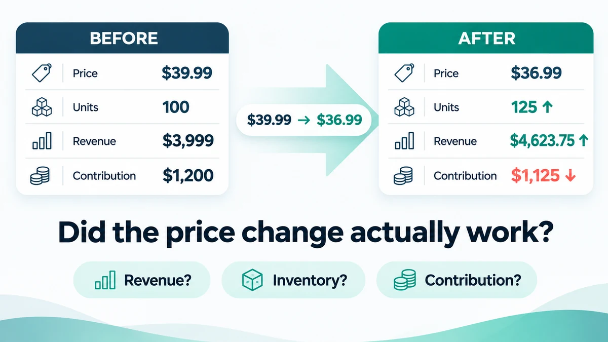
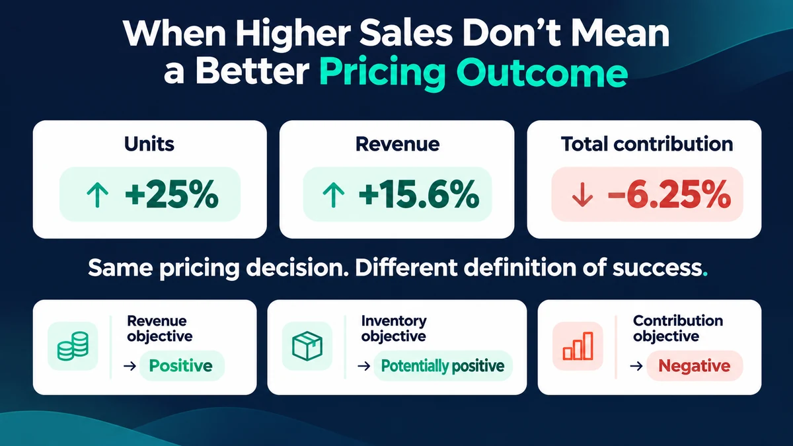
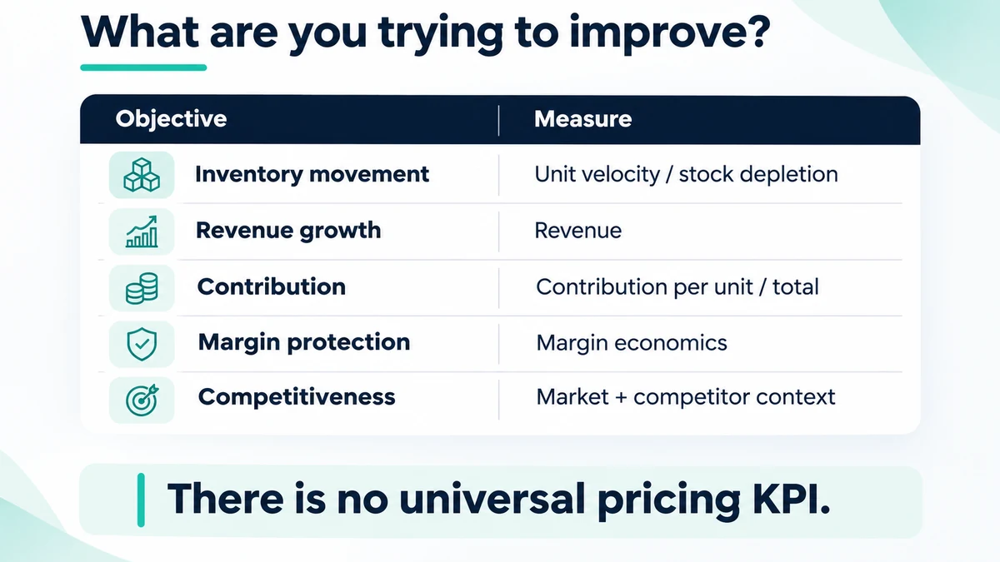
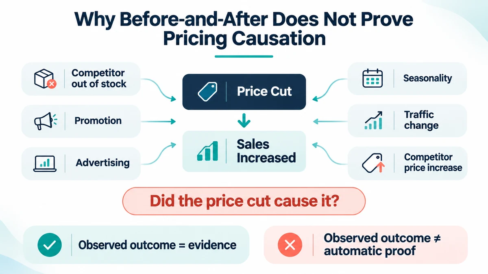

A price change can increase units and revenue while reducing contribution. Whether the decision worked depends on what the business was trying to achieve.
Most pricing decisions are judged too quickly. A merchant lowers a product from $39.99 to $36.99, and a few days later units and revenue are both up. It feels like a win, and the team moves on.
But sales going up doesn't mean the decision worked. Contribution may have fallen. The lift may have come from a competitor going out of stock, a promotion, seasonal demand, or a marketplace event that had nothing to do with your price. A pricing decision works when it achieves the objective that justified the change, and that's the question worth asking after every change: did the decision achieve what we expected it to achieve?
1. Define success before you change the price
It's easy to judge a decision after you've seen the results, because once the numbers are in, almost any outcome can be turned into a success story. That's hindsight, not evaluation.
Before the price moves, decide what you're trying to accomplish. Are you trying to increase unit sales, grow revenue, improve contribution, clear inventory, protect market share, or improve your chances of winning the Featured Offer on Amazon? These goals often pull in different directions. A lower price can raise volume while hurting profitability, and a higher price can reduce volume while improving contribution. Sometimes the best decision is not to change the price at all.
2. Sales can rise while the economics get worse
Here is a simplified, hypothetical example. It assumes contribution per unit falls by the full $3.00 price cut, with costs and fees otherwise unchanged. Real fee structures, which often include percentage-based fees, would shift the numbers slightly.
| Metric | Before | After |
|---|---|---|
| Price | $39.99 | $36.99 |
| Units sold | 100 | 125 |
| Revenue | $3,999 | $4,623.75 |
| Contribution per unit | $12.00 | $9.00 |
| Total contribution | $1,200 | $1,125 |
Units are up 25% and revenue is up about 16%. On a dashboard, those first two numbers would probably be green. But total contribution fell by about 6%.
Whether that's a good outcome depends on the objective. If the goal was faster inventory turnover, it may be perfectly acceptable. If the goal was revenue growth, it looks positive. If the goal was contribution, it moved in the wrong direction. The same result can be a success under one objective and a failure under another.

The same pricing move can look successful through revenue and unsuccessful through contribution. The objective determines how the outcome should be evaluated.
3. There's no universal pricing KPI
Many businesses look for a single metric that says whether pricing is working, but the right measure depends on why the decision was made:
- Inventory movement: unit velocity and stock depletion
- Revenue growth: revenue
- Contribution: contribution per unit and total contribution
- Margin protection: whether the economics stay healthy after the change
- Competitiveness: marketplace and competitor context, not just your own numbers

Pricing success depends on the objective behind the decision. Revenue, contribution, inventory and competitiveness require different measures.
4. Compare against a meaningful baseline
Knowing what happened is useful, but knowing what would likely have happened without the change is more valuable.
Say a product normally sells 100 units a week. You lower the price and sales rise to 125. That sounds good until you learn the whole category grew 30% that week because of a major shopping event. Now the price change may have underperformed the market.
The reverse can also be true. If you raise a price and volume holds steady while the rest of the market softens, you may have done better than the flat unit numbers suggest.
Useful baselines include historical performance, comparable time periods, similar products that didn't change price, category trends, competitor movements, and structured pricing tests.
5. Before-and-after isn't cause-and-effect
You cut a price on Monday, and sales rise on Tuesday. It's natural to conclude the price did it. But a competitor may have run out of stock, ad spend may have increased, a promotion may have launched, or another seller may have raised their price.
Before-and-after comparisons are still useful, and observed outcomes are evidence. They just aren't proof of causation. More rigorous approaches compare what happened after an intervention with an estimate of what might have happened without it, which is the idea behind methods such as Google's CausalImpact framework. Research on pricing experiments similarly treats learning about the effect of price as a distinct problem rather than assuming that an observed change proves causation. The more important the decision, the more it's worth understanding what else changed at the same time.

Sales rising after a price change does not prove the price caused the increase. Other market, promotional and competitive factors may have changed at the same time.
This matters even more on marketplaces like Amazon. Price is one input among many, alongside delivery promise, fulfillment quality, availability, and customer experience. Amazon's own Featured Offer guidance reflects that broader context. If your Featured Offer performance improves after a price cut, price may deserve some of the credit, but not necessarily all of it.
6. Sometimes holding price is the right call
Holding price is a pricing decision too. Imagine a competitor drops from $79 to $69 and you choose to stay at $79. If conversion holds, other sellers don't follow, and the competitor eventually returns to $79, you protected contribution without giving up your position.
A competitor's price move is a signal, not an instruction. Monitoring helps you tell whether reacting would have helped or just cost you margin.
7. Every pricing decision carries an assumption
Behind every price decision is a belief about how the market will respond:
- A discount assumes the extra volume will outweigh the contribution given up.
- A price increase assumes demand can tolerate it.
- Holding price assumes the competitor's move is temporary or unimportant.
- A promotion assumes the trade-off is worth the expected benefit.
Monitoring is how you test those beliefs. The useful question isn't only "what happened?" but "did what we expected to happen actually happen?" If a modest price cut was expected to drive strong volume growth and volume barely moved, that tells you something about price sensitivity, competitive dynamics, or what else is limiting conversion. Either way, the outcome becomes input for the next decision.
8. At scale, measurement becomes an attention problem
Reviewing five products by hand is manageable, but five hundred isn't. The challenge shifts to deciding where to look: where contribution dropped unexpectedly, where volume didn't respond, where competitors reacted differently than expected, where results beat expectations, or where similar products behaved very differently.
Many outcomes will simply confirm what you already believed. The ones that don't are the ones worth investigating.
A practical post-decision review
After any pricing decision, start with five questions:
- What was the objective? Revenue, contribution, units, inventory movement, margin, or competitiveness. Without this, success has no definition.
- What is the baseline? Historical performance, category performance, a comparable period, or a control group.
- What actually changed? Look at the metrics tied to the objective.
- What else changed? Competitor moves, traffic, seasonality, promotions, advertising.
- What did we learn? Hold, raise, lower, test another price point, or revisit the pricing logic.
What this means for Pricenaux
Throughout this series, we've argued that pricing shouldn't be reduced to reacting to competitor prices. The same applies after the decision is made. Pricing doesn't end when a recommendation is generated, or when a merchant clicks "update price." The outcome becomes context for the next decision.
That's how we think about Pricenaux: connecting product economics, demand sensitivity, market signals, and commercial context into one continuous process. Observe what changed, understand the context, decide, measure the outcome, and use what you learned next time.
A note from the founder
It's easy to celebrate the first number you see. Sales are up, revenue is up, and the story feels finished. But a few clicks deeper, into contribution, inventory, and competitor activity, the picture usually gets more nuanced.
That's why I don't think pricing should be judged by a single metric. Every decision starts with an objective, and monitoring is less about reporting than about learning. The strongest pricing teams aren't the ones that get every call right. They're the ones that make sure every call teaches them something.
Nermin Sad, CEO & Co-Founder, Pricenaux
Final thought
When your price changes, sales, revenue, and competitors may all move. None of those facts alone tells you whether the decision worked. Start with the objective, measure against a credible baseline, look beyond the headline numbers, and use what you learn in the next decision. When the answer turns out to be "no, it didn't work," that isn't necessarily failure. It's information.
Have a perspective on this topic?
Continue the discussion with Pricenaux and other operators on LinkedIn.
Join the LinkedIn DiscussionMake every pricing decision more informed than the last
Pricenaux helps merchants combine product economics, demand sensitivity, market signals, and commercial context to make explainable, margin-aware pricing decisions.
Or benchmark the maturity of your current pricing process in about two minutes: